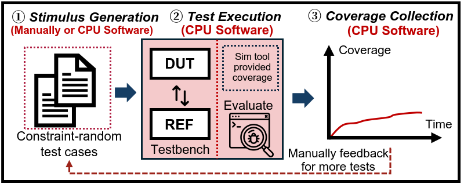
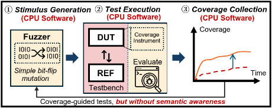
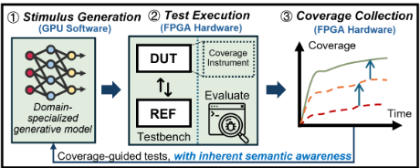
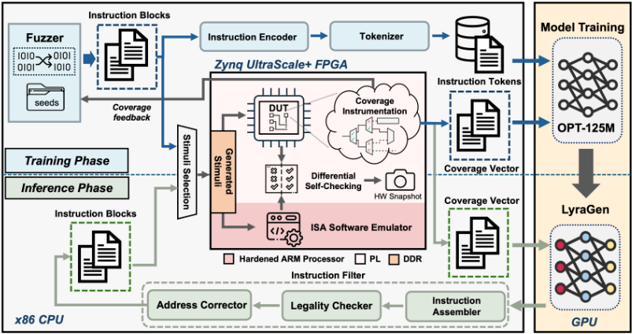
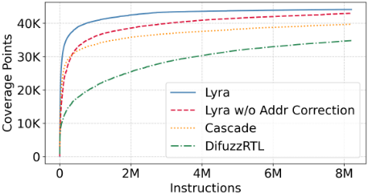
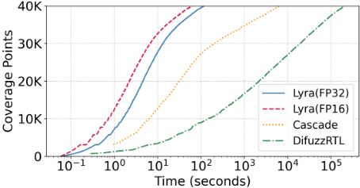
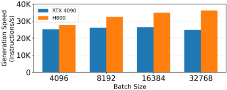
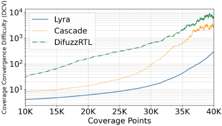

Lyra：基于生成模型处理器模糊测试的硬件加速 RISC-V 验证框架
论文针对处理器验证的两大瓶颈：激励生成、DUT 与参考模型执行及覆盖率采集全在软件中完成导致仿真速度仅数十 kHz，以及软件 fuzzer 依赖语义盲的随机变异、难以生成触发深层 corner case 的指令序列。Lyra 将 DUT（RocketCore）与参考模型分别部署于同一 FPGA SoC 的可编程逻辑与硬化 ARM 核，基于 Encore 结构做指令级差分自检，并把 Register Coverage 覆盖率点综合到板上直接采集；同时训练 125M 参数的领域专用生成模型 LyraGen，通过指令字段 token 化编码与覆盖率条件化监督学习生成语义合法的高质量 RISC-V 指令流，推理时辅以合法性过滤与访存地址纠错。结果显示覆盖率最高提升 1.27×，端到端验证较 DifuzzRTL/Cascade 最高加速 107×~3343×，收敛难度（DCV）显著更低。该'生成式激励 + FPGA 差分执行 + 板上覆盖反馈'闭环对团队的验证自动化与仿真加速有直接借鉴意义。
处理器验证受制于两大瓶颈：一是激励生成、DUT 与参考模型执行、覆盖率采集三个环节均在软件中完成，性能极低（仅数十 kHz 量级）；二是现有软件 fuzzer 依赖位翻转等语义盲随机变异，缺乏对指令语义的理解，极难生成触发深层微架构状态所需的逻辑精确、语义连贯的指令序列，导致覆盖收敛慢、验证成本高。
提出异构 GPU-CPU-FPGA 验证框架 Lyra：(1) 在同一 FPGA SoC（AMD Zynq UltraScale+ XCZU19EG）上，DUT 运行于可编程逻辑、参考模型（ISA emulator）运行于硬化 ARM 核，基于 Encore 结构做指令级差分自检，并将 Register Coverage 覆盖率点自动插桩综合到 FPGA 上直接采集，消除 VCS 软件仿真瓶颈；(2) 训练 125M 参数的领域专用生成模型 LyraGen（基于 OPT-125M 改造、从头训练），将 RISC-V 指令按字段重编码为 8-bit token（词表 257），以 22 维覆盖率向量为条件做监督学习生成指令流，避免强化学习的低效与不稳定；(3) 推理阶段设置指令合法性过滤器（格式推断、hash 映射修复）与基于 ISA 模拟器的访存地址纠错（处理非对齐与越界访问，用 auipc+addi 指令序列修补），保证生成指令流有效执行；支持 FP16 部署，并可通过 FPGA snapshot 导出至主机端 ModelSim 调试。
同等指令数下覆盖率更高：100 万指令时 Lyra 达 40738 个覆盖点，较 Cascade（33610）高 1.21×，较 DifuzzRTL（21030）高 1.94×；800 万指令收敛处仍分别高 1.11× 与 1.27×
端到端验证加速：达到 40000 覆盖点仅需 115.2 秒，较 Cascade（6610.9 秒）加速 57.4×，较 DifuzzRTL（207048.2 秒）加速 1797.3×；FP16 推理较全精度再提速 1.86×，对 Cascade/DifuzzRTL 最高加速 106.8×/3342.9×（对应摘要的 107×~3343×）
系统吞吐：全精度下较 Cascade/DifuzzRTL 高 4.65×/48.1×，FP16 下高 8.65×/89.5×
ISA 模拟器地址纠错使同指令数下覆盖率最高提升 1.96×（10800 条指令处），覆盖收敛后仍高 1.03×
覆盖收敛难度指标 DCV（ΔInst/ΔCov）：覆盖 40K 处 Lyra 为 291.5，Cascade 为 2947.0，DifuzzRTL 为 5607.6，Lyra 收敛难度显著更低
训练成本：共 9.24M <instruction, coverage> 训练对，改造后的 OPT-125M 从头训练 10 epoch，在 RTX 4090 上共 58 分钟；H800 上生成吞吐较 RTX 4090 提升 1.1×~1.4×
相比 RFUZZ/DifuzzRTL/ProcessorFuzz/Cascade 等依赖盲变异与软件级实现的 fuzzer，Lyra 将覆盖率条件化的领域专用生成模型与 FPGA 板级差分执行、板上覆盖率采集结合为全自动闭环，把执行与覆盖采集完全卸载到 FPGA；相比 ChatFuzz（闭源 GPT-2、LLM 随机性导致不可复现、依赖 VCS 覆盖率）与 GenHuzz（汇编级生成、需汇编器翻译、强化学习训练开销大），Lyra 采用机器码级 token 编码与合法性检查、监督学习替代 RL、从头训练而非微调，直接生成多样指令并消除软件仿真性能瓶颈。
相关度级别：high
命中能力域：2.4 设计验证方法学 | 2.6 仿真性能与加速器 | 2.7 EDA/验证自动化与 AI 辅助
理由：论文直接命中团队三个能力域的核心技术：2.4（覆盖率驱动验证、激励生成与差分检查方法学、覆盖收敛难度量化）、2.6（FPGA 硬件加速执行与板上覆盖率采集，明确以替代 VCS 软件仿真瓶颈为目标）、2.7（生成式 AI 辅助激励生成、全自动验证闭环与自动化插桩）。虽然验证对象是 RISC-V 处理器核而非团队的 LPDDR/HBM4/UCIe 等存储与互连 IP，但'生成模型产生语义合法激励 + FPGA 差分自检 + 板上覆盖率反馈'的范式，与团队在 IP 验证中面临的覆盖收敛慢、回归耗时长、constrained-random 用例依赖人工经验等问题高度同构，具备方法迁移价值。
建议动作：深入精读并做内部分享
arXiv:2512.13686v3 [cs.AR] 2026年3月4日
Lyra：一种采用基于生成式模型的处理器模糊测试的硬件加速 RISC-V 验证框架
Juncheng Huo ∗ 1,2、Yunfan Gao ∗ 1,2、Xinxin Liu ∗ 3,4、Sa Wang 1,2、Yungang Bao 1,2、Xitong Gao † 3,5 和 Kan Shi † 1,2
1 中国科学院计算技术研究所处理器芯片全国重点实验室（SKLP）
2 中国科学院大学
3 中国科学院深圳先进技术研究院
4 南方科技大学
5 深圳理工大学



覆盖率收集均在软件中执行，如图 1 (a) 所示。虽然这提供了细粒度的仿真可见性，但性能极低，通常仅能达到数十 kHz。
随着处理器设计日益复杂，验证仍然受制于缓慢的软件仿真和低质量的随机测试激励。近期研究已将软件模糊测试器应用于硬件验证，但这类方法依赖于语义盲目的随机变异，可能生成无法探索复杂行为的浅层、低质量激励。这些局限性导致覆盖率收敛缓慢，且验证成本高得令人望而却步。本文提出 Lyra，一个异构 RISC-V 验证框架，通过将硬件加速验证与具备 ISA 感知能力的生成模型相结合，同时应对上述两项挑战。Lyra 在 FPGA SoC 上并发执行被测设计（DUT）与参考模型，从而实现高吞吐量的差分检查和硬件级覆盖率收集。我们不再通过随机方式或简单变异来创建验证激励，而是训练一个领域专用、具备内在语义感知能力的生成模型 LyraGen，以生成高质量、语义丰富的指令序列。实验结果表明，与最先进的软件模糊测试器相比，Lyra 实现了最高 1.27× 的覆盖率提升，并将端到端验证加速最高达 107× 至 3343×，同时始终表现出更低的收敛难度。
验证；RISC-V；LLM；FPGA
随着处理器设计日益复杂，验证已成为芯片开发周期中的关键环节。近期研究表明，验证最多可消耗70%的开发工作量[1]。RISCV等新指令集架构（ISAs）的出现增加了对更敏捷、更高效验证方法的需求。这推动了人们对新型架构建模和高效仿真方法日益增长的兴趣，以确保开源CPU和IP核对社区使用而言是可靠的。
然而，传统验证的效率仍然受到两大主要挑战的限制。首先，传统验证方法学严重依赖软件仿真。验证周期的三个主要阶段：激励生成、被测设计（DUT）及其参考模型（REF）的测试执行，以及第二个挑战是验证的有效性在很大程度上取决于人工经验，尤其是在测试用例构建方面。验证工程师必须使用约束随机（CR）激励手动创建大量测试用例，以期覆盖某些特性。然而，这种方法耗时且低效，因为手动构造能够触发边界情况的复杂指令特定组合极其困难。
∗ 这些作者贡献相同。
† 通讯作者。邮箱：xt.gao@siat.ac.cn , shikan@ict.ac.cn
1
为了生成更智能的测试输入，研究者已采用软件模糊测试（fuzzing）技术来进行处理器验证[5, 7-10, 13]，如图1（b）所示。与传统的基于CR的方法不同，模糊测试利用覆盖率反馈来指导测试生成。模糊测试器生成初始输入，测量其覆盖率，然后对其进行变异以探索新状态，同时避免冗余。
然而，现有的模糊测试器通常依赖诸如位翻转之类的盲目随机变异，缺乏对指令语义的深入理解。虽然这种方法可以快速覆盖浅层验证场景，但要命中深藏的边界情况，则需要逻辑精确且语义连贯的指令序列。这类有意义的序列极不可能从纯随机变异中产生，这使得这种语义盲区成为限制传统模糊测试器有效性的根本瓶颈。
为了应对这两个挑战，我们提出了Lyra——一个具有现场可编程门阵列（FPGA）加速和基于生成模型的处理器模糊测试的高效RISC-V验证框架，如图1（c）所示。Lyra在同一FPGA片上系统（SoC）上同时实现了DUT和REF：DUT运行在可编程逻辑上，而REF运行在硬核ARM处理器上。专用硬件检查器在指令级对执行结果进行运行时差分检查。Lyra采用了在最先进模糊测试技术中被广泛使用的基于控制寄存器的覆盖率插桩方法[6, 13]，并将其直接实现在FPGA上。这使得整个覆盖率收集过程能够在FPGA自身上运行。
为了解决软件模糊测试器的语义局限性，我们训练了一个名为 LyraGen 的领域专用生成模型，其参数量为 1.25 亿。该模型能够生成高质量的 RISC-V 指令流，同时从本质上理解 RISC-V 语义。我们创建了新颖的编码方法，将指令及其对应的覆盖率信息转换为 token。在这种监督学习下，模型学会生成能够实现更好覆盖率的指令。在推理过程中，我们实现了指令合法性过滤器与地址检查器，用于修改或移除非法生成的指令，从而进一步提升验证有效性。综上所述，本文的主要贡献如下：
模糊测试（Fuzzing）起源于软件测试领域，是一种通过持续生成并执行随机化测试输入来发现程序漏洞的技术。与传统定向测试相比，模糊测试提供了更高的自动化程度，并能有效探索传统方法难以触及的边界情况和罕见执行路径。受其在软件领域成功的启发，研究人员越来越多地将模糊测试应用于硬件验证。RFUZZ [9] 首次将 American Fuzzy Lop（AFL）框架 [15] 改造用于硬件测试。DifuzzRTL [6] 在 RFUZZ 的基础上进行了改进，增加了时钟敏感的优化并引入了参考模型，从而能够更好地捕获状态转换，并更有效地检查寄存器传输级（RTL）执行结果。ProcessorFuzz [5] 提出了一种由处理器控制与状态寄存器（Control and Status Register, CSR）转换引导的覆盖率度量。Cascade [13] 则更进一步，采用程序生成方法构建具有复杂控制流和数据流的更长测试程序。
然而，由于其变异方案和语料库调度方法，DifuzzRTL 和 ProcessorFuzz 仍然存在测试激励质量低下的问题。Cascade 通过修改其缺陷评估机制来避免输出比较的开销，但作为代价，存在遗漏缺陷的风险。此外，这些框架均缺乏对指令语义的感知能力，且依赖软件级实现，导致在验证 CPU 核心等大型复杂硬件设计时效率低下。相比之下，Lyra 重新训练了一个领域专用的生成模型以实现更高效的指令生成，同时将耗时的测试执行和覆盖率收集完全卸载至现场可编程门阵列（FPGA），从而显著提升了整体验证性能。
ChatFuzz [11] 是一种基于机器学习（ML）的硬件模糊测试框架，它使用 GPT-2 模型来解读处理器语言并生成汇编代码序列，但其依赖于闭源模型，并且由于大语言模型（LLM）的随机性而存在可复现性问题。GenHuzz [14] 采用带有覆盖率反馈的硬件引导强化学习，但其工作在汇编级，需要进行汇编器翻译，这限制了指令多样性并增加了计算开销。这两项工作均依赖于基于 VCS 的覆盖率指标，从而形成了软件仿真的性能瓶颈。
Lyra 通过面向机器码的编码与合法性检查来解决上述问题，能够直接生成多样化的指令，同时避免了语法学习的困难。覆盖率条件化训练加速了收敛并减少了局部最优。此外，Lyra 采用基于 FPGA 的执行加速，显著提升了端到端系统性能。
Lyra 是一个异构验证框架，它结合了部署在 GPU 上、用于生成高质量 RISC-V 指令的领域专用生成模型 LyraGen；基于 FPGA 的测试平台；以及用于对模型生成指令进行后处理的基于 CPU 的软件程序。Lyra 的构建与使用包含两个阶段，如图 2 所示。
2

训练阶段旨在训练 LyraGen。模型训练在 GPU 上运行，而训练数据集则通过 CPU 与 FPGA 上的软硬件协同仿真生成。第 4 节详细描述了训练阶段。训练完成后，该模型便作为指令生成引擎，在推理阶段驱动 RISC-V 处理器验证，详见第 5 节。两个阶段共享同一个 FPGA 测试平台，而不依赖于耗时的软件仿真。该测试平台包含一个基于 Encore 结构 [12] 的差分检查模块，用于在被测设计（DUT）与其参考模型之间执行自检，二者并发运行于同一 FPGA SoC 上。
Lyra 基于寄存器覆盖率（Register Coverage）指标自动对可综合的覆盖率点进行插桩，这是近期硬件模糊测试工作中广泛采用的一种方法 [6]。这使得覆盖率收集可以直接在 FPGA 上执行。
训练阶段旨在开发一个领域专用的生成式模型 LyraGen，用于生成具有内在语义感知能力的高质量 RISC-V 指令流，从而克服传统模糊测试工具的随机性与语义盲区。我们重新设计了 RISC-V 指令的编码方式，使模型能够有效利用其语义结构。基于该编码方案，我们提出了一种数据收集方法学，并构建了一个包含大量 <instruction, coverage> 条目的训练数据集。
我们采用 OPT-125M [16] 作为基础模型，并通过架构修改与再训练对其进行扩展，以支持所提出的编码格式，并实现对覆盖率空间的有效探索。通过这一过程，LyraGen 学会生成大量符合底层指令集架构（ISA）语义的高质量 RISC-V 指令。
| Type.Type | Token1 | Token2 | Token ID & Bit-width.Token3 | Token ID & Bit-width.Token4 | Token5 | Token6 |
|---|---|---|---|---|---|---|
| R | Opcode (7) | Funct7 (7) | Funct3 (3) | Rd (5) | Rs1 (5) | Rs2 (5) |
| I | Opcode (7) | Funct3 (3) | Rd (5) | Rs1 (5) | ImmLo (8) | ImmMi (4) |
| I (Shift) | Opcode (7) | Funct3 (3) | Rd (5) | Rs1 (5) | Shamt (7) | |
| S | Opcode (7) | Funct3 (3) | Rs1 (5) | Rs2 (5) | ImmLo (8) | ImmMi (4) |
| B | Opcode (7) | Funct3 (3) | Rs1 (5) | Rs2 (5) | ImmLo (8) | ImmMi (4) |
| U | Opcode (7) | Rd (5) | ImmLo (8) | ImmMi (8) | ImmHi (4) | |
| J | Opcode (7) | Rd (5) | ImmLo (8) | ImmMi (8) | ImmHi (4) |
| Type.Type | Token1 | Token2 | Token ID & Bit-width.Token3 | Token ID & Bit-width.Token4 | Token5 | Token6 |
一条未经压缩的 RISC-V 指令长度为 32 位，由多个字段组成，例如操作码（opcode）、源寄存器与目的寄存器，以及随指令格式而变化的立即数（immediate）。为帮助模型捕获显式的语义信息并加速训练收敛，我们重新设计了指令表示方法，将每条 RISC-V 指令重新编码为如表 1 所列的词元（token）序列。每个词元是一个最大宽度为 8 位的整数，可表示最高至 255 的数值。
在该编码方案下，一条指令被表示为词的序列，其中每个词作为一个词元。模型学习这些词元序列的结构模式，并生成可重新组装为有效指令的新词元。各字段经词元化后的内容根据指令类型遵循表 1 中的规范。操作码字段出现在所有指令中，而其他字段仅出现在特定的指令类别中。当某条指令不存在某一字段时，该字段对应的词元将被省略。由于每种指令格式都唯一地确定了其所需的词元集合，这些省略不会引入任何歧义，因此该编码构成一种前缀码（prefix code）。
3
利用该编码方案，我们可以系统地构建模型、建立数据集、训练网络，并通过推理生成新指令。
模型训练的目标是使模型能够学习输入验证向量（即 RISC-V 指令）与其对应覆盖率之间的关系。通过使用高质量指令作为真值（ground truth），模型在输入覆盖率向量空间内学习指令特征。这使得模型能够以给定的覆盖率状态为条件生成高质量的验证向量。该方法在提升整体覆盖率的同时，避免了基于强化学习的方法所典型的迭代速度慢与收敛困难问题。
为了生成高质量的 <instruction, coverage> 对，我们构建了一个异构模糊测试系统，其中包含运行于中央处理器（CPU）上的软件模糊测试器（fuzzer）和实现于现场可编程门阵列（FPGA）上的硬件测试平台，如图 2 中的训练阶段（Training Phase）所示。该软件模糊测试器连接到被测设计（DUT）的主存储器，并持续产生 RISC-V 指令。这些指令被发送到集成了差分自校验机制的 FPGA。遵循 Encore 架构，DUT 与软件指令集架构（ISA）模拟器被实例化在同一块 FPGA 上。一旦软件模糊测试器生成一个指令块并将其写入主存储器，DUT 与 ISA 模拟器便会同时取指并执行该指令块。
为了将来自模糊测试系统的指令转换为模型所需的词元化格式，我们在硬件模糊测试流水线的输出端添加了一个编码模块。该模块将每条 RISC-V 指令翻译为指令词元（instruction-token）表示。
我们还在 FPGA 上直接插桩实现了寄存器级覆盖率收集，使系统能够在每条指令执行后立即提取覆盖率信息并将其反馈给模糊测试器。在该反馈的引导下，模糊测试器对指令进行变异以生成新的候选指令。对于每条已执行的指令，其词元化编码及对应的覆盖率向量会作为一个数据对存储在数据集中，用于模型训练。
这种监督学习方法确保模型习得 RISC-V ISA 的语义知识，并学习从低覆盖率到高覆盖率等多种覆盖率场景下的指令上下文。由此，模型得以形成对覆盖率空间行为的全面全局视图，同时避免了强化学习固有的低效性与不稳定性。
为确保快速计算与可移植性，我们采用 OPT-125M 作为基础模型，并在上述数据集上对其进行重新训练。该模型以 22 维向量形式的覆盖率数据作为输入，并预测下一条指令的词元。我们对原始架构的输入模态进行了修改：模型不再像传统大语言模型（LLM）那样接收词元 ID，而是直接接受一个数值向量。该向量首先通过一个线性层（而非嵌入层）进行处理，随后被送入模型的隐藏层，以生成用于下游计算的嵌入表示。这一修改使模型能够利用覆盖率向量中的数值语义，而不是将这些值当作数字字符来处理。
为适配多样化的指令词元格式，我们设计了 RVTokenizer，其词表与 RISC-V 指令的词元化方式保持一致。该词表包含 257 个 transformer 词元：0 至 255 中的每个数值各对应一个词元，另加一个填充符号。更高位宽的值（例如 20 位立即数）则表示为多个词元构成的序列。该方案在避免词表爆炸的同时，保留了强大的表征能力。
由于模型的输入接口和分词器均经过了大幅重新设计，所得模型不再处理自然语言，因此我们不对预训练模型进行微调，而是从头训练修改后的模型。我们使用上述数据集，在一块 NVIDIA GeForce RTX 4090 GPU 上对模型进行了 10 个 epoch 的训练，总耗时 58 分钟。
模型输出的是词元序列，必须将其重新组装为 RISC-V 指令。然而，由于概率生成模型固有的随机性，词元序列并不总能映射为格式良好的指令。为解决这一问题，我们设计了一个指令过滤器（instruction filter），在组装过程中验证每条重构指令的语法与语义有效性。
对于无效指令，我们首先尝试修复，即基于二进制编码相似度，将词元序列映射到最接近的有效指令；若修复不可行，则丢弃该指令。对于访存指令，生成的地址可能越界或未对齐，进而触发异常，使后续指令无法执行。为缓解这一问题，指令过滤器中包含一个地址净化模块（address-sanitization module），用于修正错误的内存地址。
纠正完成后，指令被送入 FPGA 测试平台，由该平台在 DUT 与参考模型之间执行自校验。硬件可综合的覆盖率点在编译时自动完成插桩，因此覆盖率数据可以在运行时直接在 FPGA 上采集，并反馈给 LyraGen，以生成更多指令，从而实现覆盖率收敛。
所有生成的 token 按照表 1 中的编码方案被顺序组装为初始指令。随后，每条指令都会经过一个过滤器，该过滤器检查指令是否符合 RISC-V 规范，并且不会触发非法指令异常。如果检测到任何问题，过滤器会尝试对其进行修复。
过滤器首先读取前两个 token，以推断该指令的基本格式（例如 R-Type、I-Type）。接着，它根据第一个 token 确定 opcode，并生成相应的 funct3 或 funct7 字段。对于其余字段，过滤器会根据其语义约束采用不同的策略。如果某个字段被限制在少量合法取值范围内，过滤器会通过基于哈希的映射将生成的 token 映射到这些有效选项之一。如果某个字段可以在其位宽内取任意值（例如立即数（immediate）字段的片段），过滤器则直接使用生成的 token 值。
对于立即数，我们的 token 表示方式会将数值拆分为高位、中位和低位三个片段，以避免词表爆炸。在合法性检查期间，过滤器会根据指令类型所要求的位宽，将这些片段组合起来，重构出完整的二进制立即数。
4
在所有字段均完成验证与修正后，过滤器会按照指令集架构（ISA）的标准编码格式，将它们组装为一条完整的 RISC-V 指令。
访存指令除了语义合法性检查之外，还需要额外的检查，以防止无效或异常的内存访问。为解决这一问题，我们设计了一个基于 RISC-V ISA 模拟器的访存地址修正模块。当模型生成的指令通过合法性检查后，它们会在 ISA 模拟器中进行仿真。在仿真过程中，每当一条访存指令执行时，该模块都会检查其目标地址。如果地址无效，则将其修正为落在预定义的合法内存区域内，并将修改后的指令写回内存。随后，模拟器从出错指令处重新取指，使执行得以正常继续。由于 ISA 级模拟器不建模处理器的微体系结构细节，这一过程比硬件级仿真快得多。
在应用修正之前，会先保留原始指令的各个字段，例如源寄存器、目的寄存器和操作码（opcode），以确保地址修正过程不会改变指令的语义。修正策略分两步进行：首先，确定一个合法的目标地址；其次，根据原始地址与修正后地址之间的差异，调整相关的指令字段。该模块处理两类访存异常：非对齐（misalignment）和越界访问（out-of-bounds access）。当目标地址不是所访问数据大小的整数倍时，会发生非对齐异常；当地址落在所分配内存区域之外时，会发生越界访问。
对于非对齐访问，修正方法很直接：将目标地址的低位对齐，使其与所访问的字节数相匹配。例如，加载两个字节的 lh 指令要求地址的最低位为零。随后调整该指令的偏移量（offset）字段，以反映地址的变化并保持一致性。
处理越界访问则更为复杂。偏移量字段仅有 12 位宽，因此无法表示任意的 32 位地址调整。非法目标地址与最近的合法地址之间的差值可能超出仅靠偏移量所能修正的范围。为解决这一问题，我们引入了一个辅助指令序列来调整地址的高位。访存指令及其后的所有指令向下移位，我们用一个 auipc 指令后跟一个 addi 指令来填充空出的槽位。这两条指令均使用从原始指令中保留的源寄存器和目的寄存器。它们的立即数值编码了原始地址高位与修正后地址高位之间的差值。重写完成后，执行从新插入的 auipc 处重新开始。
指令合法性检查确保验证过程不会因未定义或非法指令而中止。地址修正模块则防止处理器核心访问无效的内存区域。这些组件共同作用，显著提升了所生成指令流的有效性。
Lyra 消除了以往工作依赖耗时软件仿真从 VCS 等仿真器收集覆盖率数据所带来的性能瓶颈。取而代之的是，经后处理的指令被送入一个基于 Encore 结构 [12] 的差分检查模块，该模块运行于将可编程逻辑（PL）与硬核 ARM 处理器相结合的现代 FPGA 片上系统（System-on-Chip）之上。被测设计（DUT）运行在 PL 上，而其软件参考模型则运行在同一 FPGA 的片上 ARM 处理器上。这种设置实现了并发执行，并对双方的 I/O 行为和关键寄存器进行动态自检。
Lyra 基于寄存器覆盖率（Register Coverage）指标 [6] 对可综合的覆盖率点进行插桩。覆盖率数据直接在 FPGA 上收集，并反馈给 LyraGen 以指导后续的指令生成，从而构建一个人工干预极少的全自动验证闭环。
Lyra 还利用 Encore 结构提供的硬件快照能力来捕获完整的 FPGA 状态，包括逻辑块、触发器、片上存储器以及 DDR 等外部设备。用户可以将这些快照从 FPGA 中传输出来，在宿主 PC 上使用 ModelSim 等外部软件仿真器来分析和调试问题 [3, 4]。
我们在一台工作站上实现了 Lyra，该工作站配备 Intel Core i7-12700 CPU、NVIDIA GeForce RTX 4090 GPU，以及一块搭载 AMD Zynq UltraScale+ XCZU19EG FPGA 的 Fidus Sidewinder FPGA 开发板。在 FPGA 硬件实现方面，我们使用 Vivado 2020.2，目标频率为 100MHz。我们将 Lyra 与两款最先进的用于 RISC-V 处理器验证的软件模糊测试工具 DifuzzRTL 和 Cascade 进行了对比。所有实验均采用开源 RISC-V 处理器 RocketCore [2] 作为被测设计（DUT），共生成 924 万个 <instruction, coverage> 对用于模型训练。
We first evaluate the impact of ISA-emulator-based address correction by comparing coverage results with and without correction enabled. The results are shown in Figure 3.
It can be seen that the validation system with address correction (blue solid line) consistently achieves higher coverage than the system without it (red dotted line), given the same number of generated instructions. For example, at 10800 generated instructions, address correction yields 1 . 96 × higher coverage, which is the largest observed difference. Even as coverage begins to converge at 8 million instructions, the system with address correction still achieves 1 . 03 × higher coverage. Based on these results, we enable address correction by default in all subsequent experiments to maximize coverage.
Wethencompare the coverage convergence performance of Lyra, Cascade and DifuzzRTL, as shown in Figure 3. When executing the same number of instructions, Lyra achieves significantly higher coverage than both DifuzzRTL and Cascade. For example, after 1 million instructions, Lyra reaches 40738 coverage points-1 . 21 ×
5


higher than Cascade (33610) and 1 . 94 × higher than DifuzzRTL (21030). At 8 million instructions, where coverage begins to converge, Lyra still outperforms the previous approaches by 1 . 11 × and 1 . 27 × against Cascade and DifuzzRTL, respectively. These results demonstrate that Lyra covers more states with fewer instructions and can potentially converge at a higher coverage level.
对于这三种方法，我们以时间衡量整个验证系统的端到端性能，其中包括指令生成、后处理（若存在，如 Lyra 中那样）以及被测设计（DUT）执行。除全精度版本外，我们还部署了 FP16 实现，如图 4 所示。对于给定的覆盖率目标，所提出的 Lyra 框架相比先前的方法取得了显著的性能提升。例如，Lyra 仅用 115.2 秒便达到 40000 个覆盖率点，相比 Cascade 的 6610.9 秒实现了 57.4× 的加速，相比 DifuzzRTL 的 207048.2 秒实现了 1797.3× 的加速。此外，Lyra-FP16 相比全精度实现取得了 1.86× 的性能提升，对应于相比 Cascade 和 DifuzzRTL 分别最高 106.8× 和 3342.9× 的加速。
我们对端到端工作流中各阶段（指令生成、后处理和指令执行）的时间消耗进行了剖析，并计算了整体系统吞吐量，如表 2 所汇总。Lyra 的性能提升源于两个关键因素。首先，LyraGen 能够快速生成大量高质量指令，使覆盖率迅速上升至目标水平。其次，基于 FPGA 的硬件仿真极大地加速了执行过程。在全精度推理下，Lyra 的系统吞吐量分别比 Cascade 和 DifuzzRTL 高出 4.65× 和 48.1×。在 FP16 推理下，Lyra 的吞吐量相比其全精度配置提升了 1.86×，分别达到 Cascade 和 DifuzzRTL 吞吐量的 8.65× 和 89.5×。

| Breakdown | DifuzzRTL | Cascade | Lyra_FP32 | Lyra_FP16 |
|---|---|---|---|---|
| Generation | 16711.6s (CPU) | 522.8s (CPU) | 81.5s (GPU) | 28.2s (GPU) |
| Post-process | N/A | N/A | 14.4s (CPU) | 14.4s (CPU) |
| Execution | 190271.6s (CPU) | 6058.1s (CPU) | 19.3s (FPGA) | 19.3s (FPGA) |
| Total | 207048.2s | 6610.9s | 115.2s | 61.9s |
| Throughput | 133.9 | 1385.4 | 6442.8 | 11990.5 |
| (Instructions/sec) | 1 × | 10 . 3 × | 48 . 1 × | 89 . 5 × |
| Breakdown | DifuzzRTL | Cascade | Lyra_FP32 | Lyra_FP16 |
LyraGen 的设计与实现充分利用了现代 GPU 所提供的并行性。这意味着当部署在更强大的 GPU 硬件上时，模型的性能可以进一步提升。相比之下，基于 CPU 的软件模糊测试工具从根本上受限于单核 CPU 性能，难以通过多核并行大幅加速指令生成。我们将 LyraGen-FP16 部署在 NVIDIA H800 GPU 上，并评估其在不同批大小下的生成吞吐量，如图 5 所示。与 RTX 4090 相比，生成性能提升了 1.1× 至 1.4×，证明了 Lyra 在更高端 GPU 平台上的强大可扩展性。
随着覆盖率的提升，进一步的改进变得越来越困难。这一挑战在处理器验证中尤为突出，因为要到达某些深层微架构状态，需要高度结构化且语义精确的指令序列。传统模糊测试工具在很大程度上依赖盲目的随机变异，极难捕捉或利用指令的复杂语义。相比之下，以 LyraGen 为代表的基于生成模型的方法能够智能地生成高质量的验证向量，从而加速覆盖率收敛。
6

为了量化实现覆盖率收敛的难度，我们定义了一个度量指标 𝐷𝐶𝑉 = Δ 𝐼𝑛𝑠𝑡 / Δ 𝐶𝑜𝑣 ，其中 Δ 𝐼𝑛𝑠𝑡 表示已执行指令数的增量，Δ 𝐶𝑜𝑣 表示对应的覆盖率增长。DCV 值越高，表明每获得一个单位的覆盖率增益需要执行更多指令，反映出提升覆盖率的难度更大。图 6 中的实验结果表明，随着覆盖率上升，所有方法都面临越来越大的困难。然而，在任意给定的覆盖率水平下，我们的方法始终获得远低于 DifuzzRTL 和 Cascade 的 DCV。这一优势在更高的覆盖率水平下变得更加显著。当覆盖率达到 40K 时，Lyra、Cascade 和 DifuzzRTL 的 DCV 值分别为 291.5、2947.0 和 5607.6。这一差距表明，Lyra 面临的收敛难度低于基线方法，从而能够保持更快的收敛速度。
我们提出了 Lyra，一种异构的 GPU-CPU-FPGA 验证框架，解决了现有模糊测试工具的语义盲区问题以及基于软件的仿真的性能局限。通过将指令集架构（ISA）感知的指令生成与硬件加速的执行和检查相结合，Lyra 相比最先进（SOTA）方法实现了最高 1.96× 的覆盖率提升和最高 3343× 的吞吐量提升。